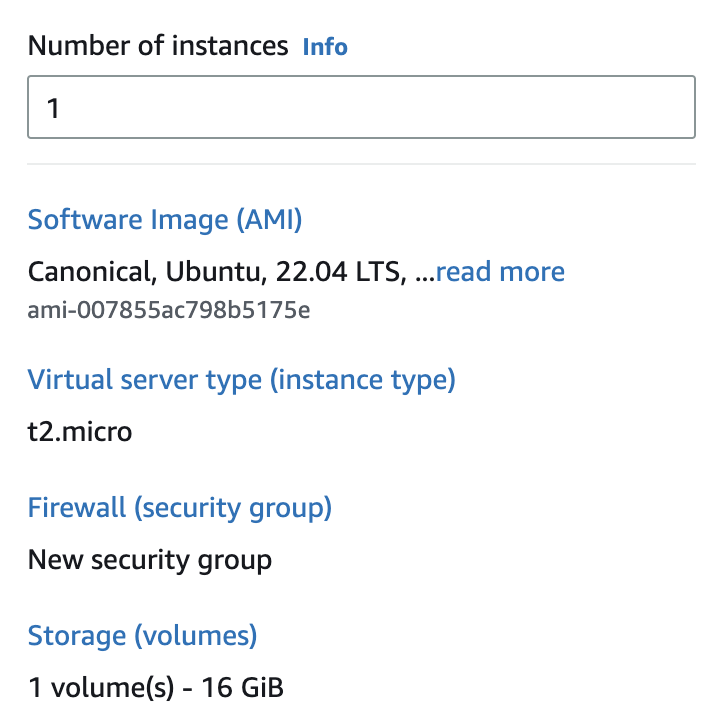

10 Getting Started with the Cloud
Let’s say your organization decides that they need a server to process a large monthly analytics job. If the year is before 2006, you basically only have one option, hosting a server yourself – usually called on-prem.
So before you can start running the job, you’ll need to buy a physical server, wait for it to be delivered, install it in a server rack, and get it configured with the proper operating system, networking, and connectivity. Only then can you start configuring it to run analytics workloads.
Things are different today. While there are still organizations who run on-prem analytics workloads, many organizations are moving or have moved their data science and analytics workloads to the cloud.
So, what is the cloud? To put it simply, the cloud is the term for the immense server farms owned by the provider companies who rent them to organizations in need of computational capacity. When you want to get a server from the cloud, you can just request a certain configuration from the cloud provider and you’ll have it within seconds.
In this chapter, we’re going to get into what the cloud is, why you might want to use it, and spend some time on a lab where we’ll get a cloud server of our own.
Around the year 2000, the Amazon.com team centralized their IT platform across the company so instead of each team running and hosting its own servers, they would get them from a centralized platform.
Over the next few years, Amazon execs realized that just like this service was valuable to other teams at Amazon, other organizations would also be interested in renting server capacity from AWS rather than running it themselves. They launched Amazon Web Services (AWS) in 2006. It wasn’t the first cloud service, but it was the first one to get major commercial traction.
Before we boost the cloud too much, let’s do some hype-busting.
Over the last decade, you’d often hear people say that they were going to save money by moving to the cloud. Often, the explanation was that the flexibility of the cloud was going to enable dynamic autoscaling of server capacity. So even if they paid a little more per hour, they were going to save so much by turning capacity way down at night that it’d work out in their favor.
It turns out that even with the cloud, the engineering needed to make autoscaling happen this smoothly is extremely hard and only the most sophisticated IT/Admin organizations have achieved anything close to this goal.
While there might be individual examples to the contrary, I think it’s safe to say this hasn’t materialized, and most organizations don’t save money by moving to the cloud.
It’s hard to prove that any particular organization lost money in a cloud migration, but there’s a reason why AWS was only 13% of Amazon’s revenue in 2021, but a whopping 74% of the company’s profits for that year.1
Additionally, an a16z report found that the total cost of ownership (TCO) – including staffing – for bringing server workloads in-house for large, established companies like Dropbox, was only 1/3 to 1/2 the amount of running the same workloads in a public cloud provider.2
There’s a reason why there’s a small consulting industry solely focused on saving money on AWS bills.
So let’s assume your organization isn’t going to beat the curve at autoscaling all their cloud services. Why should you move to the cloud?
The first – and most important – reason is flexibility. While the cloud may be more expensive than hosting servers on-prem, it’s way more flexible. In an on-prem-only world, your organization has to buy and host all the server capacity it needs. But in a world with cloud resources, you can have a new server up or rescale an existing one. This is an incredible ability for a small organization, an organization with unpredictable workloads, or for temporary workloads.3
The second reason is about IT team scope and competency. Say you work for a small organization with only a few employees. In the pre-cloud world, you couldn’t run a server until you hired or contracted with someone to run a server rack for you.
In today’s world, all you need to do is feel comfortable working on the command line – and you can get a server of your own.
It’s also worth considering the incentives of IT/Admin teams and professionals. IT/Admin teams tend to be stretched really thin, so the chance to offload a major component of their work – physically hosting servers – is really appealing. Moreover, as IT/Admin professionals have observed the world moving in a cloud-first direction, the resume-building incentives of individual professionals have moved towards the clouds. When I’m looking for my next job, it’s probably going to be way more valuable to say that I’m an expert at working with cloud-based Kubernetes clusters than saying that I’m really good at managing physical servers.
10.1 Layers of cloud services
While the basic premise of the cloud is rent a server, there are layers and layers of services on top of that basic premise. Depending on your organization’s needs, it may make sense to rent a very basic service, or a higher level one.
Let’s talk about cakes to help make the levels clear. This year, I’m planning to bake and decorate a beautiful cake for my friend’s birthday. It’s going to be a round layer cake with white frosting, and it’s going to say “Happy Birthday!” in teal with giant lavender frosting rosettes.
Now that I’ve decided what I’m making, I have a few different options for how I get there. If I’m a real DIY kind of person, I could buy all the ingredients from the grocery store and make everything from scratch. Or I could buy a cake mix – reducing the likelihood I’ll buy the wrong ingredients or end up with unnecessary leftovers. Or maybe I don’t want to bake at all – I could just buy a premade cake already covered in white frosting and just do the writing and the rosettes.
The choice of how much to DIY my friend’s birthday cake and how much to get from a bakery is very much akin to your choices when buying server capacity from the cloud.
TODO: Image of getting cake w/ IaaS, PaaS, SaaS
In the US, a huge fraction of server workloads run on servers rented from one of the “big three clouds” – Amazon Web Services (AWS), Microsoft Azure, and Google Cloud Platform (GCP). There are also numerous smaller cloud providers, many of which target more specific use cases.
It’s totally possible to just rent the raw ingredients from these cloud providers – they’ll happily rent you the most basic cloud services like servers, networking, and storage and let you put them together yourself. This kind of cloud service – the equivalent of baking from scratch – is called Infrastructure as a Service (IaaS, pronounced eye-az).
But then I’m responsible for managing all of the reproducibility stack – I have to make sure the servers are up to date with new operating systems and security patches, while also ensuring there are modern versions of R and Python on the system, and making sure there are RStudio and Jupyter Notebooks present.
But just as you might not want to have to buy eggs, milk, and sugar just to end up with a pretty cake, IT/Admin organizations are increasingly taking advantage of the cloud equivalent of cake mixes and premade blank sheet cakes.
If I want to offload more of the work, I can think about a Platform as a Service (PaaS – pronounced pass) solution. This would give me the ability to somehow define an environment and send it somewhere to run without worrying about the underlying servers. For example, I might want to build a docker container with Python and Jupyter Notebook and host it somewhere that autoscales for the number of users and the amount of other resources needed.
There are a bunch of different entities you can run in this way, and services to match each. For example, if you want to run a general app, you can use something like AWS’s Elastic Beanstalk to run a user-facing app that dynamically scales (TODO: Azure/GCP equivalents), if you want to run a container, you might use XXXX, and if you want to get a Kubernetes cluster as a service, you might use XXXX. If you want to just run a function, there’s always AWS Lambda.
I am not recommending you run a data science workbench on a service like Elastic Beanstalk. This actually tends not to work very well, for reasons we’ll get into in a bit.
If I want to go one level more abstracted, I might want to go with a Software as a Service (SaaS - pronounced sass) solution. This would be something like one of the cloud providers hosted machine learning environment where you can train, deploy, and monitor machine learning models. AWS has SageMaker, Azure has Azure Machine Learning, and GCP has Vertex AI. And there are organizations that host popular data science tools like Posit.cloud and Saturn Cloud that you can use.
Sometimes you’ll hear people describe PaaS or SaaS solutions called “going serverless”.
The first thing to understand about serverless computing is that there is no such thing as serverless computing.
Every bit of cloud computation runs on a server - the question is whether you have to deal with the server or if you just deal with a preconfigured service.
In this book, we’ll be working exclusively with IaaS services – taking the most basic services and building up a working data science environment. Once you understand how these pieces fit together, you’ll be in a much better place if it turns out your organization wants to leverage more abstracted versions of those services.
10.2 Common services for data science usage
If you’re not familiar with cloud provider terminology, it can be very hard to tell what service you might need from a cloud provider, and they don’t really help the matter. It’s very common (especially in AWS) to have many different services that fulfill similar needs, and it can be really hard to concretely tell the difference.
Making the issue even more difficult, many companies go out of their way to make their services sound grand and important and don’t just say, “this is a ___ you can rent”.
It’s helpful to keep in mind that at the very bottom, all you’re doing is renting servers and storage and managing networking and permissions for the servers and storage. Every other service is just a combination of server, storage, networking, and permissions that comes with software pre-installed or configured to make your life easier.4
We’re going to talk through some of the basic services that are offered by each of the three major cloud platforms.
Azure and GCP tend to name their offerings pretty literally, while AWS chooses cutesy names that have, at best, a tangential relationship to the task at hand. I’m going to try to name the services for each of the purposes I’m talking about, but it’s worth noting that feature sets aren’t exactly parallel across cloud providers.
This makes AWS names a little harder to learn, but much easier to recall once you’ve learned them. In this section – contrary to standard practice – I’m going to use the common abbreviated names for AWS services and put the full name in parentheses as these are just trivia.
Remember, at the bottom of all cloud services are servers and each of cloud service provider has a service that is “just rent me a server”. AWS has EC2 (Elastic Cloud Compute) and Azure has Azure VMs, and Google has Google Compute Engine.
Along with servers, there are two main kinds of storage you’ll rent. The first is file storage, where you’ll store things in a file directory like on your laptop. These are AWS’s EBS (Elastic Block Store), Azure Managed Disk, and Google Persistent Disk.
The major cloud providers all also have blob (Binary Large Object) storage. Blob storage allows you to store individual objects somewhere and recall them to any other machine that has access to the blob store. The major blob stores are AWS Simple Storage Service (S3), Azure Blob Storage, and Google Cloud Storage.
There are also two important networking services for each of the clouds – a way to make a private network and a way to do DNS routing. If you don’t know what these mean, there will be a lot more detail in Chapter 12. For now, it’s enough to know that private networking is done in AWS’s VPC (Virtual Private Cloud), Azure’s Virtual Network, and Google’s Virtual Private Cloud. DNS is done in AWS’s Route 53, Azure DNS, and Google Cloud DNS.
Once you’ve got all this stuff up and running, you need to make sure that permissions are set in the right way. AWS has IAM (Identity and Access Management), Azure has Azure Active Directory, and Google has Identity Access Management.
Now, there are a variety of things you might want to do past these basic tasks of server, storage, networking, and access management. Here are a few more services you’ll likely hear about over time.
| Service | AWS | Azure | GCP |
|---|---|---|---|
| Kubernetes cluster | EKS (Elastic Kubernetes Service) | AKS (Azure Kubernetes Service) | GKE (Google Kubernetes Engine) |
| Run a function as an API | Lambda | Azure Functions | Google Cloud Functions |
| Database | RDS/Redshift5 | Azure Database | Google Cloud SQL |
| ML Platform | SageMaker | Azure ML | Vertex AI |
10.3 Comprehension Questions
- What is the difference between PaaS, IaaS, and SaaS? What’s an example of each that you’re familiar with?
- What are the names for AWS’s services for: renting a server, file system storage, blob storage
10.4 Lab: Intro to AWS
Welcome to the lab!
The point of these exercises is to get you hands on with running servers and get you practicing the things you’re learning in the rest of the book.
If you walk through the labs sequentially, you’ll end up with a working data science workbench. It won’t suffice for any enterprise-level requirements, but it’ll be secure enough for a hobby project or even a small team.
These days most people are using servers from a cloud provider. We’re going to use AWS, as they’re by far the biggest cloud provider and the one you’re most likely to run into in the real world.
At a high level, you can do all of this with any cloud provider. Feel free to try if you prefer Azure or GCP, but the details on how to get started and service names will be different.
In the lab for this chapter, we’re going to get you up and running with an AWS account and show you how to manage, start, and stop EC2 instances in AWS.
The server we’ll stand up will be from AWS’s free tier – so there will be no cost involved as long as you haven’t used up all your AWS free tier credits before now.
For AWS things, I’m going to tell you what to do…but not the exact buttons, as AWS frequently changes the interface and this will almost certainly be out-of-date by the time you read it. The high level steps won’t change though.
Throughout the lab, we’re going to go step by step through getting things done. If you know how to do any of the steps, I’d recommend you at least skim the step for any important details.
10.4.1 Stand up an EC2 instance
10.4.1.1 Step 1: Login to the AWS Console
We’re going to start by logging into AWS.
An AWS account is separate from an Amazon account for ordering stuff online and watching movies. If you’ve never created an account for AWS in particular, you’ll have to make an account.
Start by signing in at https://aws.amazon.com. You most likely haven’t created an IAM account and should just login as root.
Once you’ve logged in, you’ll be confronted by the AWS console. There are a ton of things here – feel free to poke around if you want – come back to continue when you’re ready.
10.4.1.2 Step 2: Stand up an instance
AWS’s most basic “rent a server by the hour” service is called EC2 (Elastic Cloud Compute).
There are five things we have to configure in the process of launching the server. I’ll give you advice on each of them. If I don’t mention it here, feel free to stick with defaults.
10.4.1.2.2 Image
Next, you’ll have to choose the image. An image is a snapshot of a system and serves as the starting point for your server. Images can range from just a bare operating system to a running RStudio instance that’s paused in between two computations.
All clouds have the concept of images. AWS calls their’s Amazon Machine Images or AMIs. Some images are free and some are paid.
Since we’re going to work on configuring the server from the ground up, we’re going to choose an AMI that’s just the operating system. For the lab, let’s use Ubuntu Server LTS 22.04 image. It should say free tier eligible.
If you want to use a different operating system, that’s fine. For the purpose of being able to follow along with this lab, I’d recommend using Ubuntu 22.04.
If you happen to be reading this after 2026 or so, there will be newer operating systems. A newer version of Ubuntu should work very similarly for the purposes of this lab.
10.4.1.2.3 Instance Type
You’ll have to choose an Instance Type. In AWS, there are two components to instance type – the family and the size. The family is the category of server that you’re using. In AWS, families are denoted by letters and numbers, so there are T2s and T3s, C4s, R5s, and many more.
Within each family, there are different sizes. The sizes availble vary by the family, but generally range from nano to multiples of xlarge like 24xlarge.
For now, I’d recommend you get the largest server that is free tier eligible, which is a t2.micro with 1 CPU and 1 Gb of memory as of this writing.
A t2.micro with 1 CPU and 1 Gb of memory is a very small server. For example, your laptop probably has at least 8 CPUs and 8 Gb of memory.
If all you’re doing is walking through the lab, it should be sufficient, but if you actually want to do any data science work, you’ll need a substantially larger server.
If you want to pick a server for actual data science work, there’s lots of advice on how to choose in Chaper 15.
10.4.1.2.4 Keypair
Next, you’ll need to make sure you have a keypair. A keypair is a special kind of SSH key that’s only valid for a particular server.
If you aren’t sure what that means, I’d recommend you check out Chapter 6.
Even if you have a keypair you already use, I’d suggest creating a new one and naming it do4ds-lab-key. Download the pem version of your key.
I’ll use that name throughout the lab, so you can just copy commands straight from this book if you use the same name.
I’d recommend creating a directory for this lab, perhaps something like do4ds-lab and putting your keypair there. If you’re not going to do that, just make sure you keep track of where you downloaded it.
10.4.1.2.5 Storage
For storage, you should bump it up to something more than 8 Gb. As of this writing, you can get 30 Gb under the free tier. I’d recommend at least 16 Gb, but feel free to go bigger if you wish.
10.4.1.3 Step 3: Start your Server
If you followed these instructions, the summary on the right side should look something like this:

Click Launch Instance. AWS is now creating a virtual server just for you.
If you go back to the EC2 page and click on Instances you can see your instance as it comes up. You may need to remove the filter for State: Running since it’ll take a few moments to be Running.
10.4.1.4 Step 4: Grab the address of your server
If you click on the actual instance ID in blue, you can see all the details of your server.
Wait for a few moments for the instance state to transition to Running.
Once the instance is up, you’ll be able to see the instance ID and public IP addresses, which were auto-assigned.
Copy the Public IPv4 DNS address , which starts with ec2- and ends with amazonaws.com. That little icon on the left of the address copies it.
In the rest of the labs in this book, I’m going to write the commands using the bash variable SERVER_ADDRESS. That means that if you create that variable, you’ll be able to just copy the commands out of the book.
For example, as I write this, my server has the address ec2-54-159-134-39.compute-1.amazonaws.com. So would set my server address variable with SERVER_ADDRESS=ec2-54-159-134-39.compute-1.amazonaws.com.
If you’re used to R or Python, where it’s best practice to put spaces around =, notice that assigning variables in bash requires no spaces around =.
10.4.1.5 Step 5: Stop the Server
Whenever you’re stopping for the day, you may want to suspend your server so you’re not paying for it overnight or using up your free tier hours. You can suspend an instance in the state it’s in so it can be restarted later.
If you’re storing a lot of data with your instance, it may not be free – but it is quite cheap. In the free tier, a suspended instance should be free for some time.
Whenever you want to suspend your instance, go to the EC2 page for your server. Under the Instance State drop down in the upper right, choose Stop Instance.
After a couple minutes the instance will stop. Before you come back to the next lab, you’ll need to start the instance back up so it’s ready to go.
If you stop your server, the server address will change and you’ll have to use the new one. In Chapter 13, we’ll get into getting a stable IP address and URL for the server.
If you want to completely delete the instance at any point, you can choose to Terminate Instance from that same Instance State dropdown.
10.4.2 Step 6: Put the penguins data and model in S3
As discussed in Chapter 3, we’re going to want to put our data and our model somewhere other than on our local machine.
While this data doesn’t get updated, you might want to be able to update the data and the model periodically.
A bucket is a great place to store non-tabular data like a model. AWS’s bucket storage is called S3. You’ll probably find yourself using it a lot. It can also store flat files to be used by DuckDB.
For the model, {vetiver} interfaces with another package called {pins} which makes it easy to store data in a variety of backends, including an s3 bucket.
First, you’ll need to create an S3 bucket in the AWS console. Give it a name that’s descriptive and memorable – it will also have to be unique. I named mine do4ds-lab. You’ll have to choose the AWS region where your bucket is located – take note of this.
Now, let’s change our code to write to the S3 bucket we created. Vetiver makes this very easy. All you have to do to move the model into S3 is to change the line that creates the bucket in your code so instead of using a board_temp, it uses board_s3.
model.qmd
That line will now become
Now, if you try this line in your code, it won’t work. Why? Because of authentication. The bucket we’re using isn’t public and AWS needs to know that we’re actually allowed to access it.
In this case, we’re going to use environment variables to give access to the S3 bucket. If you play around a little, you’ll discover that {pins} does authentication via the s3fs package, which can do authentication in several different ways. We’re going to use environment variables because they work nicely locally and from GitHub Actions.
The 3 environment variables are AWS_ACCESS_KEY_ID, AWS_SECRET_ACCESS_KEY, and AWS_REGION. You can get the access key and secret access key from the AWS console.
Once you’ve done that, create a file in the directory where your project is called .env. In that file you’ll put the access keys, along with the AWS region where you put your bucket.
It’ll look something like this6
.env
Now, add a block to the code that loads in the environment variables.
model.qmd
If these variables are in the environment, the call to board_s3 should just work locally.
We have one more step to make this work so that the model can also be written from GitHub actions. GitHub Actions needs to know how to access those environment variables too.
So in the Render and Publish step, we’re going to declare those variables as well as environment variables.
Once you’re done, that section of the publish.yml should look something like this.
.github/workflows/publish.yml
on:
workflow_dispatch:
push:
branches: main
name: Quarto Publish
jobs:
build-deploy:
runs-on: ubuntu-latest
permissions:
contents: write
steps:
- name: Check out repository
uses: actions/checkout@v2
- name: Set up Quarto
uses: quarto-dev/quarto-actions/setup@v2
- name: Install R
uses: r-lib/actions/setup-r@v2
with:
r-version: '4.2.0'
use-public-rspm: true
- name: Setup renv and install packages
uses: r-lib/actions/setup-renv@v2
with:
cache-version: 1
env:
RENV_CONFIG_REPOS_OVERRIDE: https://packagemanager.rstudio.com/all/latest
- name: Install Python and Dependencies
uses: actions/setup-python@v4
with:
python-version: '3.10'
cache: 'pip'
- run: pip install jupyter
- run: pip install -r requirements.txt
- name: Render and Publish
uses: quarto-dev/quarto-actions/publish@v2
with:
target: gh-pages
env:
GITHUB_TOKEN: ${{ secrets.GITHUB_TOKEN }}
AWS_ACCESS_KEY_ID: ${{ secrets.AWS_ACCESS_KEY_ID }}
AWS_SECRET_ACCESS_KEY: ${{ secrets.AWS_SECRET_ACCESS_KEY }}
AWS_REGION: us-east-1Now, unlike the GITHUB_TOKEN secret, which GitHub Actions automatically provides to itself, we’ll have to provide these secrets to the GitHub interface.As of this writing, you can provide them under the repository settings, secrets and variables, actions.
The other thing you’ll need to do is to update the API to use the S3 pin. Luckily, this is very easy. Just update the script you used to build your Dockerfile so it pulls from the pin in the S3 bucket rather than the local folder.
Now, the script to build the Dockerfile looks like this:
---
title: "Prepare Dockerfile"
format:
html:
code-fold: true
---
## Load Environment
```{python}
from dotenv import load_dotenv
load_dotenv()
from pins import board_s3
from vetiver import vetiver_prepare_docker
board = board_s3("do4ds-lab", allow_pickle_read=True)
vetiver_prepare_docker(board, "penguin_model")
```There are a variety of ways to put the data into S3 as well. I would recommend doing this if you are going to be working with data that will update. In fact, DuckDB allows you to directly interface with parquet files on S3.
https://www.visualcapitalist.com/aws-powering-the-internet-and-amazons-profits/↩︎
https://a16z.com/2021/05/27/cost-of-cloud-paradox-market-cap-cloud-lifecycle-scale-growth-repatriation-optimization/↩︎
By temporary workloads, I mean for example the need for a very large server to run a particular machine learning model. This is not the autoscaling failure case, because you’re not expecting this server to turn itself on and off. Instead, you’d stand it up – run it for a few hours, days, or weeks while you’re using it, and then manually turn it off. This is super easy with a cloud server and very difficult in an on-prem world.↩︎
There are also some wild services that do specific things, like let you rent you satellite ground station infrastructure or do Internet of Things (IoT) workloads. Those services are really cool, but so far outside the scope of this book that I’m fine with talking like they don’t exist.↩︎
There are many others. These are just the most popular I’ve seen for data science use cases.↩︎
Not my real access key or secret access key. Never share them.↩︎